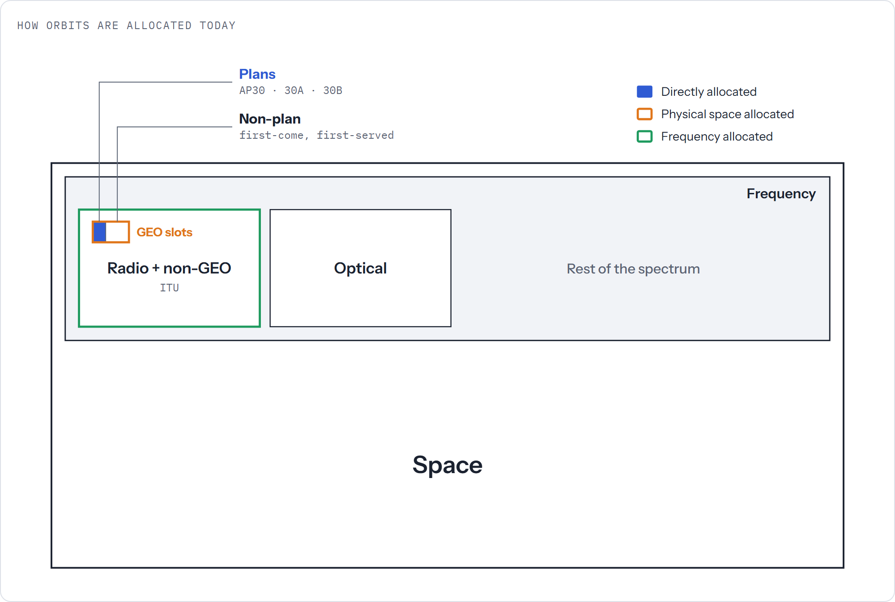

How Earth orbits are allocated today
Except for some geostationary slots, allocation is first-come, first-served once you get domestic permission to launch.
Allocation is not ownership
While allocation commonly carries the connotation of ownership, in space it does not. The Outer Space Treaty (OST), which has been ratified by 188 countries, including all major spacefaring nations, states in Article I that space “shall be the province of all [hu]mankind” and in Article II states “…outer space, including the Moon and other celestial bodies, is not subject to national appropriation by claim of sovereignty, by means of use or occupation, or by any other means.” Article II is considered to be customary international law, binding on all actors, even countries which have not signed the treaty. In line with this, nobody owns physical orbits in space or the spectrum used to make transmissions. Any allocations that have occurred are considered temporary and thus not seen as appropriation.
Geostationary orbit slots
Let’s begin with the exception mentioned above: the particularly scarce Geostationary Orbit (GEO) slots are the only place where physical orbits, and some direct allocations, have occurred. Geostationary orbits are the set of orbits that allow a satellite to stay fixed above a specific place on Earth’s surface. GEO is located at a specific altitude, 35,786 km ± 200 km, above Earth’s surface, and sits above the equator at 0° inclination. This is what makes GEO slots extremely limited compared to other orbits that span much larger ranges of altitudes and inclinations.1 Paired with a range of valuable uses, this scarcity has historically made GEO slots the most sought-after positions in orbit.
The International Telecommunications Union (ITU), a specialized agency of the United Nations, records each GEO slot as an orbital location paired with a radio frequency assignment.2 Current operating standards mean there are roughly 1800 of these slots.3 Some of these slots were directly allocated to member states through the ITU Radio Regulations (RR) Appendix 30/30A/30B Plans, and the remainder are obtained through first-come, first-served (FCFS) filings with the ITU. Outside of these GEO slots, actors only file for frequencies but otherwise choose the physical orbits themselves.
The RR Plans are the most notable attempt to prevent FCFS from entrenching early actors by trying to uphold Article 44 of the ITU Constitution, which states:
“radio frequencies and any associated orbits … are limited natural resources and that they must be used rationally, efficiently and economically … so that countries or groups of countries may have equitable access to those orbits and frequencies, taking into account the special needs of the developing countries and the geographical situation of particular countries.”
However, even here the Plan allocations are a second-best resource that consists of less commercially attractive frequencies and suboptimal orbital positions. Their usage remains low, and the most valuable non-Plan GEO slots remain held by the original actors that claimed them. These non-Plan GEO slots, and all other orbits, currently function on a FCFS basis, with several different allocation mechanisms dictating the resulting allocation.
All other orbits
The story starts on the ground where operators must receive one or more national licences to launch and operate their objects in space. The purpose of these licences is to help ensure operators follow the rules of the states that are responsible for, liable for, or serviced by the operator.
Responsibility comes from OST Art. VI, which states that governments bear international responsibility for national activities in space, whether carried out by governmental or private operators, and that these activities require authorization and continuing supervision. OST Art. III adds that all activities in space must be carried out in accordance with international law.
Liability comes from the Liability Convention (1972), which makes the launching state(s) liable for damages. Like the OST, it has also been ratified by all major spacefaring nations, and by 98 countries in total. Strict liability applies for damage caused by space activities on the surface of the Earth and in airspace; fault liability applies for damage caused in space, but only for damage to another state’s spacecraft, or to people or property aboard it. In other words, there is no liability for damage to the space environment, or debris on debris. The launching state can be any, or some combination, of: the state that launches, the state that procures the launch, the state from whose territory the object is launched, or the state from whose facility it is launched.
National licensing is how states implement these international treaty duties, by turning them into licence conditions operators must adhere to at launch and during operation. An operator must also receive licences from any foreign state(s) whose market they want to access. It is through these licences that states apply their domestic rules on operators, with the ability to revoke licences or fine them serving as the predominant enforcement mechanisms. This is where existing rules on activities in physical orbital space appear, though they are limited to tracking, debris management, and voluntary coordination between operators rather than allocating space.
The ITU
A common part of the licensing process is a filing with the ITU,4 the main international body that manages how the electromagnetic spectrum (EMS) is used. Its primary goal is to prevent EMS interference between the various actors operating in space. This is because spectrum has traditionally been the scarce resource rather than physical space; that is to say, a given orbit can accommodate far fewer satellites than could physically fit, because of the resulting transmission interference.
Besides GEO slot allocation, the ITU divides the radio spectrum into bands for different types of services and registers radio frequencies that operators apply for through their national administration. Priority is FCFS: later filers must protect earlier ones against interference. Two exceptions apply regardless of filing date: GEO allocations receive interference protection from non-GEO systems within specific bands, and Plan allocations are guaranteed that interference stays below a fixed threshold. These protections attach to specific radio frequencies rather than any particular satellite(s). As protections stay valid while in use, with gaps of up to three years allowed, countries can effectively keep them indefinitely by replacing satellites when they are decommissioned.
There are mechanisms in place to help ensure operating procedures can adapt over time to address gaps in the system. The RR are updated periodically through World Radiocommunication Conferences (WRC), held every three to four years, and the ITU Constitution itself can be amended at the Plenipotentiary Conference (PP), held every four years. Some notable updates have been made so that Article 44 of the ITU Constitution mentioned earlier can be better upheld. These include:
- Anti-warehousing measures, which try to prevent filings for assignments that are not intended to be used.
- The Appendix 30/30A/30B Plans allocating GEO slots to every member state to help ensure equitable access.
Other forms of orbit management
- Operator agreements: rules and behaviour are also set bilaterally by operators coordinating with each other. As there is no general right-of-way rule in orbit, this is commonly where who moves to avoid a collision gets worked out.
- Registration Convention (1975): most of the above is worked out before launch, but this registry is updated after launch. It is maintained in practice by the United Nations Office for Outer Space Affairs (UNOOSA) and requires a launching state (only one, if there are several) to register, as soon as practicable, all objects launched into or beyond Earth orbit, and to later report when they are no longer in orbit.
What this system looks like
There are a number of mechanisms that exist to govern space both internationally and domestically, manifesting as a patchwork of rules, institutions, and operators coordinating to expand on a predominantly FCFS basis. Efficiency, equity, and externality issues have developed over time, and to some degree the system has tried to adapt to them. Anti-warehousing countermeasures, the RR Appendix 30/30A/30B Plans, and new debris rules required by national licensors are examples. However, problems persist, and new ones appear: the rate of debris creation in orbit is still increasing, the absence of traffic-management standards and growing satellite population increases collision risks, and some actors are filing to deploy large numbers of satellites in strategic or cheap orbits.5 This last problem could let the first mover crowd out later actors, raising the cost to compete. In this FCFS regime with no meaningful caps on operator scale, the current allocation is primarily the result of launch capability, which suggests power will continue concentrating with those who build it the quickest. All this said, the OST and the ITU have set the groundwork for an equitable access floor. However, existing incumbents made these measures less effective, the floor can only weakly be enforced, and they don’t include any clear bound on any actor’s size. For any future agreement on allocating space to be implemented successfully, it will have to ensure that enforcement of the agreed-upon allocations is meaningful, and that the allocations can adapt as intelligence and/or industrial explosions compress the time needed to concentrate power.
Allocations have traditionally treated spectrum as the scarce resource, but if the increasingly congested traffic in low Earth orbit (LEO) is any indication, physical orbits may gradually become the scarce resource. Improvements in technology will further contribute to this shift. An agreement covering the Sun would likely focus on the physical orbits around it, as the orbits an actor occupies determine how much of the Sun’s energy it can capture.

- For example, Low Earth Orbit runs from 160 km to 2000 km in altitude, and can run from 0°–180° of inclination. ↑
- For clarity, I use “allocation” in its usual meaning as a stand-in for what the ITU refers to as “allotments” and “assignments”. ↑
- Satellites tend to be kept at their nominal orbital position ±0.1° for collision and interference avoidance, which allows the 360° GEO orbital band to fit 1800 slots. ↑
- Military radio installations can be exempt under Article 48 of the ITU Constitution. ↑
- The linked SpaceX filing files for two orders of magnitude more satellites than currently exist, across strategically valuable sun-synchronous orbits (SSO) and a 30° inclination band that seems particularly cheap for them to reach with existing launch facilities. ↑
- Most satellites use radio waves for transmissions between the surface and Earth orbit. This is in part due to Earth’s atmosphere interfering with a large fraction of the EMS except for being particularly transparent for radio wavelengths. This is one of the reasons that spectrum is artificially scarce compared to what it would be in empty space, and why it is depicted as a subset of space. The more that transmissions are done in orbit, or using optical frequencies, the larger frequency grows relative to “space”. This seems to be the trend as the total number of satellites in low Earth orbit have grown. ↑